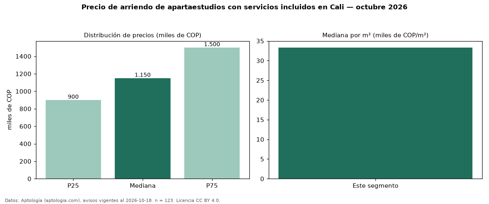

Precio de arriendo de apartaestudios con servicios incluidos en Cali — octubre 2026
En Cali, la mediana de canon mensual de apartaestudios con servicios incluidos es COP 1,15 millones, según 123 avisos vigentes. Frente a la mediana de todos los apartaestudios en arriendo de Cali (COP 1,50 millones, n = 479), queda 23 % por debajo; este segmento reúne el 26 % de esos avisos. Por metro cuadrado, la mediana es COP 33.333/m² al mes (n = 114), 17 % por debajo del conjunto de referencia (COP 40.000/m²). El área mediana anunciada es 35 m². El estrato más frecuente es 3 (31 % de los avisos con estrato). La mitad central de los avisos va de COP 900.000 a COP 1,50 millones (razón 1,7), una dispersión moderada. 69 % de los avisos con el dato declara parqueadero. Datos: Aptología (aptologia.com), CC BY 4.0 — https://www.aptologia.com/arriendo/cali. Archivos: PDF, CSV con las cifras y gráfica PNG.

| Avisos únicos | 123 |
|---|---|
| Percentil 25 | COP 900.000 |
| Mediana | COP 1.150.000 |
| Percentil 75 | COP 1.500.000 |
| Mediana por m² | COP 33.333 |
Fuente: avisos vigentes de portales inmobiliarios recopilados por Aptología, deduplicados (mínimo 30 avisos únicos por celda). Precios pedidos, no cerrados. Fecha: 2026-10-18.